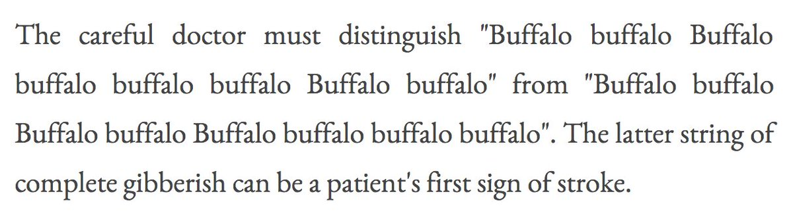

These are all the tweets and replies that @RadishHarmers made on 2017-6-8:
Id:
872608917842345984
Timestamp:
2017-6-8 at 0:19:12
In reply to user:
@mattcasey
In reply to tweet ID:
872414576817713152
Id:
872725414891839489
Timestamp:
2017-6-8 at 8:2:8
Id:
872725653812002816
Timestamp:
2017-6-8 at 8:3:4
Id:
872728162831958016
Timestamp:
2017-6-8 at 8:13:3
Id:
872728310886809600
Timestamp:
2017-6-8 at 8:13:38
In reply to user:
@RadishHarmers
In reply to tweet ID:
872725653812002816
Id:
872741541118222338
Timestamp:
2017-6-8 at 9:6:12
Id:
872744097202753536
Timestamp:
2017-6-8 at 9:16:22
Containing photo:

Id:
872891977750138881
Timestamp:
2017-6-8 at 19:3:59
Id:
872893271772495873
Timestamp:
2017-6-8 at 19:9:8
In reply to user:
@MaximumOverDerp
In reply to tweet ID:
872817464324878336
Id:
872937117147582464
Timestamp:
2017-6-8 at 22:3:21
Id:
872938949634703360
Timestamp:
2017-6-8 at 22:10:38
In reply to user who no longer can be found (RIP).
In reply to tweet ID: 872938627218538496